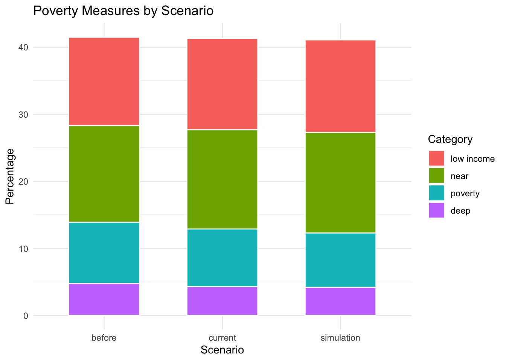
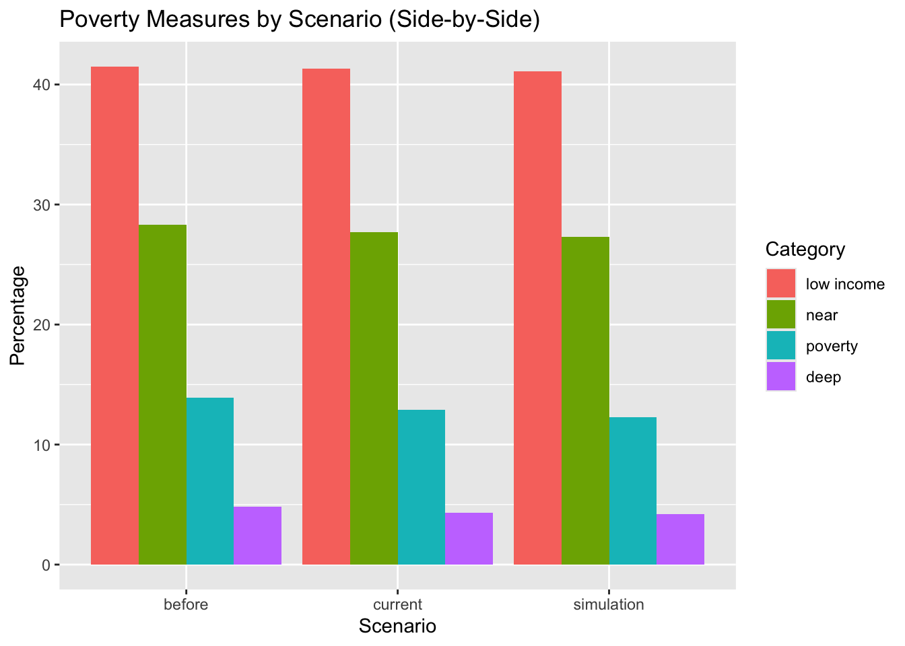
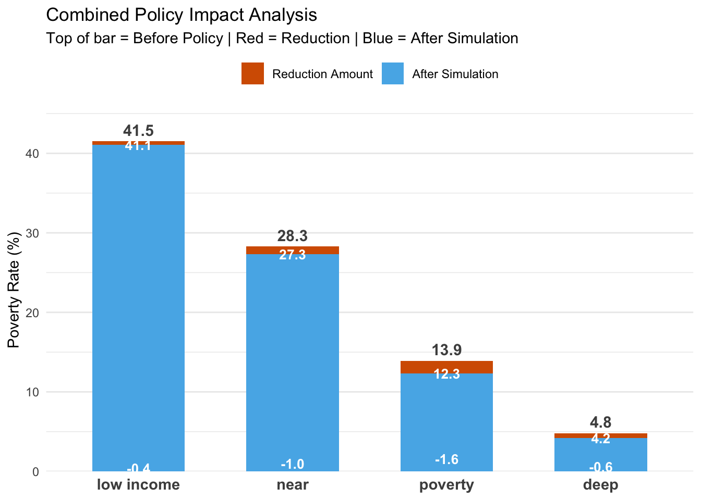
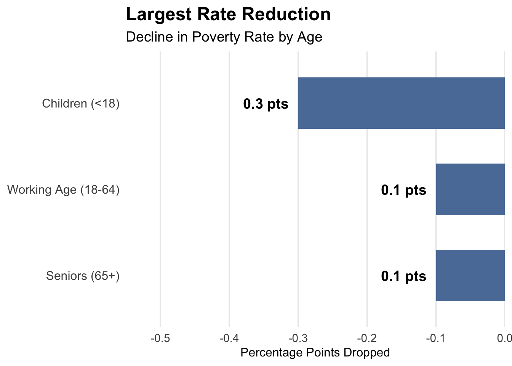

Aggregate four poverty metrics together (from week 1).
Explore the demographic breakouts.
Build small, static test visuals (e.g., bar charts, slope charts, small multiples).
Try showing change between scenarios (Before → Current → Simulation/s).
3.2 Visual 1: Stacked bar chart
Code
library(readr)library(dplyr)library(tidyverse)library(ggplot2)df <-read_csv("cpsp_simulation_data.csv")# 2. Prepare Data (Fixing the Layering Order)df2 <- df |>pivot_longer(cols =c("before", "current", "simulation"),names_to ="name",values_to ="value" ) |>mutate(# Fix X-axis ordername =factor(name, levels =c("before", "current", "simulation")),# CRITICAL: Order 'type' so the widest bars (Low Income) are level 1,# and smallest bars (Deep) are the last level.type =factor(type, levels =c("low income", "near", "poverty", "deep")) ) |># Sort the data so the Background bars (Low Income) are drawn firstarrange(type)# 3. Plot (Using Default Colors, but fixing the geometry)p <-ggplot(df2, aes(x = name, y = value, fill = type)) +# position = "identity" places bars in front of each other (nested) # instead of stacking them on top of each other.geom_col(position ="identity", width =0.6, color ="white") +labs(title ="Poverty Measures by Scenario",x ="Scenario",y ="Percentage",fill ="Category" ) +theme_minimal()p

This visualization combines all four poverty metrics into a single view. It captures both the total population contest and the change in each of the four poverty metrics. It uses the total bar height as the ‘Before’ baseline, and we can compare how the height of each poverty metrics change from before policy to after simulation. However, it is still difficult to see which poverty metric has changed the most and which has changed the least through this chart because all changes are very small.
3.3 Visual 2: Side-by-side grouped bar chart
Code
ggplot(df2, aes(x = name, y = value, fill = type)) +geom_col(position ="dodge") +labs(title ="Poverty Measures by Scenario (Side-by-Side)",x ="Scenario",y ="Percentage",fill ="Category" )

While the previous stacked bar chart successfully communicated the nested nature of poverty strata, it obscured the individual scale of the smaller categories. I introduced this side-by-side view to break that dependency. By unstacking the metrics, we can now clearly see the independent magnitude of each group. The Near Poverty population is nearly double that of the standard Poverty group. This layout ensures that stakeholders can evaluate the trajectory of each metric on its own terms, without the visual bias of being stacked on top of a larger base.
3.4 Visual 3: Waterfall-like Chart
Code
# 1. Prepare Data using Base Pipe |># We need to structure it so 'Simulation' is the base, and 'Reduction' sits on top.plot_data <- df2 |>pivot_wider(names_from = name, values_from = value) |>mutate(# Calculate the reduction (this will be the "floating" red part)Reduction = before - simulation,# We'll use 'Simulation' as the base barBase = simulation,# Create labelslabel_before =as.character(round(before, 1)),label_change =sprintf("-%0.1f", Reduction), # e.g. "-0.6"label_sim =as.character(round(simulation, 1)) ) |># Pivot back to long format for stacking: 'Base' (Sim) and 'Reduction'pivot_longer(cols =c(Base, Reduction), names_to ="component", values_to ="value") |># Set factor levels so 'Reduction' is always on TOP of 'Base'mutate(component =factor(component, levels =c("Reduction", "Base")))# 2. Generate the Combined Waterfallggplot(plot_data, aes(x =reorder(type, -value), y = value, fill = component)) +# Create the Stacked Bar (Base + Reduction = Total Before)geom_col(width =0.6) +# A. Label the "Before" value (Total Height)# We sum the values per type to get the Y position for the top labelgeom_text(aes(label = label_before, group = type), stat ="summary", fun = sum, vjust =-0.5, fontface ="bold", color ="grey30", size =4) +# B. Label the "Change" (Inside the Red block)geom_text(data =subset(plot_data, component =="Reduction"),aes(label = label_change),position =position_stack(vjust =0.5),color ="white", fontface ="bold", size =3.5) +# C. Label the "After/Sim" (Inside the Blue block)geom_text(data =subset(plot_data, component =="Base"),aes(label = label_sim),position =position_stack(vjust =0.5),color ="white", fontface ="bold", size =3.5) +# Scales and Stylingscale_y_continuous(expand =expansion(mult =c(0, 0.1)), name ="Poverty Rate (%)") +scale_fill_manual(values =c("Base"="#56B4E9", # Blue for Result"Reduction"="#D55E00"), # Red for Droplabels =c("Reduction Amount", "After Simulation")) +labs(title ="Combined Policy Impact Analysis",subtitle ="Top of bar = Before Policy | Red = Reduction | Blue = After Simulation",x =NULL, fill =NULL) +theme_minimal() +theme(legend.position ="top",panel.grid.major.x =element_blank(),axis.text.x =element_text(size =11, face ="bold") )

I chose not to do the exact waterfall chart but another visualization applying waterfall chart’s logic because we need to facet the for the original waterfall chart for different metrics, and four graphs are more difficult to interpret than one graph. Instead, I created this graph using the waterfall logic, to visualize the subtraction from before policy to after policy simulation.
This visualization reveals that while Low Income is the largest group, the policy is actually most efficient for the Poverty metric, achieving a 1.6 percentage point reduction. This key insight is that the policy targets the middle tier more effectively than the extremes.
I think this visualization shows the delta more effectively than the stacked bar chart because it has the same baseline and every metric starts at zero. However, it fails to capture the total population context again.
4 Visual 4: Demographic-Age:Horizontal Bar Chart
Code
# 1. Load Datademo_data <-read_csv("demographic_data.csv")# 2. Prepare Dataplot_data <- demo_data |>filter(Category =="Age") |>mutate(# Calculate negative change for plotting (bars go left)change = Sim_Rate - Current_Rate,# Create label using ABSOLUTE value (removes the negative sign)label_text =sprintf("%.1f pts", abs(change)) )# 3. Generate the Graphggplot(plot_data, aes(x = change, y =reorder(Group, abs(change)))) +# Draw the bars (using negative x)geom_col(fill ="#5B7CA6", width =0.6) +# Add the text labels# hjust = 1.2 pushes the text further left (away from the bar end)geom_text(aes(label = label_text), hjust =1.2, fontface ="bold", size =5) +# Stylinglabs(title ="Largest Rate Reduction",subtitle ="Decline in Poverty Rate by Age",x ="Percentage Points Dropped",y =NULL ) +# X-axis setup: goes from -0.5 to 0 (right-aligned)scale_x_continuous(limits =c(-0.5, 0), expand =expansion(mult =c(0.1, 0))) +theme_minimal(base_size =14) +theme(plot.title =element_text(face ="bold", size =18),plot.subtitle =element_text(size =14, color ="black"),panel.grid.major.y =element_blank(), panel.grid.minor =element_blank(),axis.text.y =element_text(size =12, color ="grey30"),axis.title.x =element_text(size =12) )

To demonstrate a scalable method for analyzing demographic impacts, I prototyped this Rate Reduction chart using Age as a case study. By ranking groups by their absolute drop in poverty, the visualization shows that the policy is three times more effective for Children (0.3 pts) than for Working Age adults or Seniors (0.1 pts). This prototype establishes a replicable framework that can be applied to other demographic categories to identify the primary beneficiaries across the entire database.
In the current simulation tool, we only have numerous isolated tables for the impact of policy simulation on demographic categories. So I used this Cleveland Dot Plot to synthesize the absolute rate reduction in poverty rate across all demographic sub-categories into a single view, which allows direct cross-group comparison. In this plot, we can see that the children are the primary beneficiaries of this policy. This information enables policymakers to instantly verify whetehr the intervention is reaching its target population more effectively than other demographic groups.
4.2 Supervisor Feedback and Next Steps:
The supervisor preferred the stacked bar chart over the waterfall-like plot because she wants to emphasize on the population context more. However, to ensure the specific impact of the policy is not lost within the stack, the next step should explicitly label and highlight the metric experiencing the largest reduction, drawing the viewer’s attention to the primary driver of change.
Regarding the demographic analysis (Visual 4), the supervisor noted that while the current Cleveland Dot Plot effectively ranks broad categories, it fails to capture interactive effects.By that, she means that we can tell children are benefiting the most, but we cannot determine whether it is rural children or children in the metro area.Future visualizations will need to disaggregate these factors to reveal these deeper nuances.